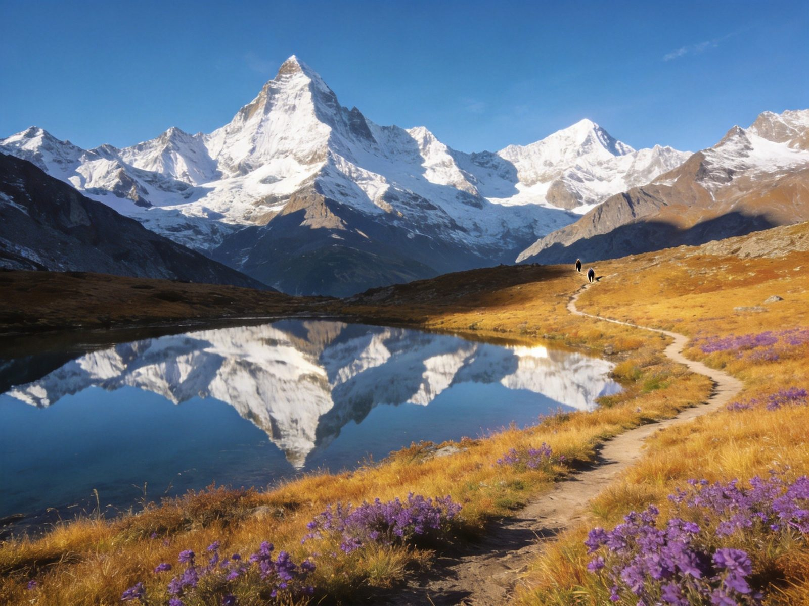
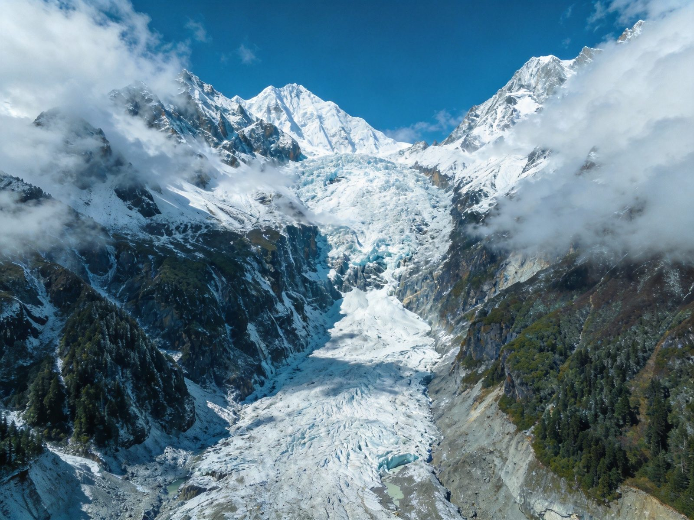
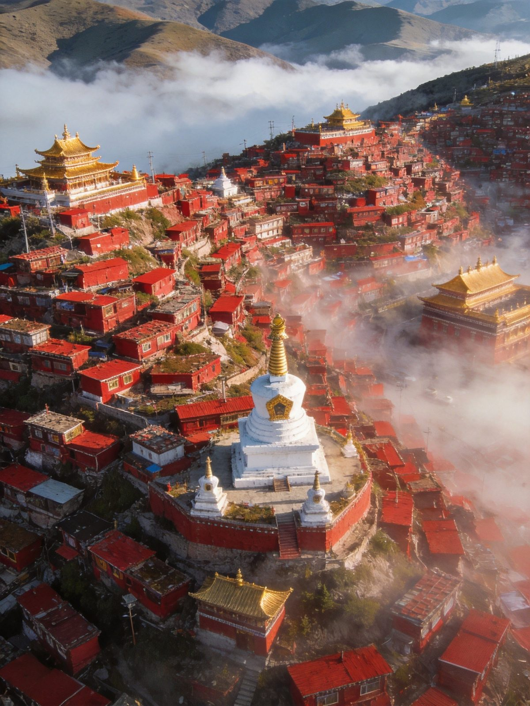

🚗 川西大环线 · WEST SICHUAN ROAD TRIP
川西大环线自驾全攻略
中国风景最密集的自驾天堂之一——蜀山皇后四姑娘山、「红色佛国」色达、最后的香格里拉稻城亚丁赛跑般接连出现。川西环线分小环线（800–1000km）与大环线（1500–2400km）：小环线轻松休闲适合首刷与亲子，大环线串联三大IP适合摄影深度游，但海拔渐升、驾驶强度大。折多山隧道已通车、路面基本柏油，普通轿车可走主线。**每天开车 3–6 小时**、住低玩高防高反。本文含小/大环线双路线、沿途核心景点、门票、高反应对、住宿美食预算、避坑全讲清。
📍 目的地：四川甘孜 · 阿坝
👥 2–6 人 拼车/自驾
⏱️ 小环线5–7日 / 大环线7–10日
💰 人均 3000–6000
🏞️小环线 · 休闲版
核心策略：成都→四姑娘山→丹巴→塔公→新都桥→康定→成都，全程约 800–1000km，日均开车 3–4h，海拔循序渐进，首晚住宿尽量选低海拔（丹巴约1900m），亲子带宠友好。
👥 首刷/亲子/怕高反适配：小环线不像大环线那样「身体在地狱」，节奏松弛、每天 2–3 个核心景点，是绝大多数人的川西入门首选。
🗺️ 小环线 7 日参考动线
-
DAY 1 · 成都 → 四姑娘山镇
🚗 约4h🏔️ 下午游双桥沟（观光车直达）
💡 双桥沟最轻松、适合懒人，长坪沟/海子沟徒步强度大；住四姑娘山镇（约3200m）。
-
DAY 2 · 四姑娘山 → 丹巴甲居藏寨
🚗 约3–4h🏯 甲居藏寨碉楼/大金川河谷
💡 甲居藏寨火遍全网，住藏式民宿、看碉楼，海拔仅约2100m，正好休整补充。
-
DAY 3 · 丹巴 → 塔公 → 新都桥
🚗 约3h（经八美）⛰️ 塔公草原/塔公寺远眺雅拉雪山
🪨 墨石公园（异域星球感，约60元）
💡 新都桥是「摄影家天堂」，傍晚到可逛镇内；选供氧房住更舒适（约3300m）。
-
DAY 4 · 新都桥休闲/摄影日
🌉 鱼子西/贡嘎观景台🛖 甲根坝/冷嘎措（可选）
💡 小环线精华在「慢」，塔公草原河边一坐一下午，看云从雅拉雪山后翻过来才是对的打开方式。
-
DAY 5–7 · 新都桥 → 康定 → 成都
🚗 穿过康定（折多山隧道已通）🏙️ 回到成都吃火锅
⚠️ 返程日尽量早出发，避开午后与节假日堵点；折多山段有施工管制时关注实时路况。
⛰️大环线 · 深度版
核心策略：成都→四姑娘山→色达→稻城亚丁→新都桥→成都（或走亚丁+色达+四姑娘山的经典大环线约1500–2400km），一次串联三大IP，按顺时针走海拔逐渐升高更易适应。
👥 老司机/摄影狂热者适配：大环线里程长、日均开车4–7h，需2人轮换驾驶；高原弯道多、部分地区路况一般，建议底盘高的SUV更稳妥。
🗺️ 大环线 8–10 日参考动线
-
DAY 1–2 · 成都 → 四姑娘山（双桥沟）
🚗 约4h🏔️ 双桥沟观光车轻松游
💡 双桥沟门票80+观光车70约150元；四姑娘山镇住一晚适应海拔（约3200m）。
-
DAY 3 · 四姑娘山 → 色达（红色佛国）
🚗 约6h🕍 色达五明佛学院/红房子
⚠️ 色达每日限流约3000人，需提前抢金马游客中心名额预约；进入圈定区域时控制游览时间，尊重当地习俗。
-
DAY 4 · 色达 → 新都桥
🚗 约5h🌉 鱼子西/摄影家天堂新都桥
💡 返程翻折多山（隧道已通），住新都桥供氧房，为进亚丁养精蓄锐。
-
DAY 5 · 新都桥 → 稻城亚丁
🚗 约6h（经理塘天空之城）⛰️ 海子山/稻城白塔
⚠️ 理塘县城海拔4014m不建议过夜，住稻城县/香格里拉镇（约2900–3750m）更利于适应。
-
DAY 6 · 稻城亚丁短线/长线游
🏔️ 短线冲古寺→珍珠海🥾 或长线牛奶海→五色海
⭐ 稻城亚丁 2026 年免票期见公告、须官方小程序实名预约限流1.5万；长线徒步约6–8h海拔最高4700m，量力而行。
-
DAY 7–10 · 亚丁返成都（可顺游丹巴）
🚗 原路/经丹巴返成都回程
💡 全程弹性安排，可在丹巴甲居藏寨、墨石公园停留；返程预留缓冲应对路况，别赶夜路。
⭐沿途核心景点 · 单独详览
川西环线上的王牌景点——值不值得去、怎么玩、大概门票，按动线顺序。

四姑娘山 · 蜀山皇后
首站
四姑娘山 · 「蜀山皇后」
由四座相连雪山组成，主峰幺妹峰海拔6250米，被誉为「东方阿尔卑斯」。景区分为双桥沟、长坪沟、海子沟三条沟：双桥沟全程观光车最轻松，长坪沟、海子沟徒步更具挑战，雪山草甸溪流风光绝美。
👍 必去理由：川西第一站名片。双桥沟门票80+观光车70约150元，轻松拍雪山大片，亲子首选。

色达 · 红色佛国
大环线
色达五明佛学院 · 红色佛国
漫山遍野的绛红色小木屋沿喇荣山谷而建，是全世界最大的藏传佛学院之一，被视为「红色佛国」。红房子、经幡、僧人诵经声构成震撼画面，晴日里绛红与雪山相映格外庄严。
👍 必去理由：大环线最特别的景观。每日限流约3000人，务必提前预约；游览尊重当地规矩、控制圈定区域停留时间。

稻城亚丁 · 蓝色净土
大环线
稻城亚丁 · 蓝色星球最后一片净土
仙乃日、央迈勇、夏诺多吉三座神山下的高山圣湖，被《刘子超》的「最后的香格里拉」形容无数次的纯净之地。短线看珍珠海、长线冲牛奶海五色海，是川西环线的高潮。
👍 必去理由：不来亚丁不算走完川西大环线。2026 年免票期看公告、限流1.5万须小程序实名预约；长线徒步量大，量力而行。
新都桥/塔公 · 摄影天堂
小环线
新都桥 · 塔公草原 · 摄影家天堂
新都桥是川西「摄影家天堂」，金秋时节白杨金黄、光影流转；塔公草原上塔公寺经幡飞扬，远眺雅拉雪山的画面经典。两处最适合慢慢游、拍日落晨光。
👍 必去理由：小环线精华。塔公草原看雪山倒影、鱼子西/贡嘎观景台等日落，随手都是屏保级大片。
甲居藏寨 · 嘉绒秘境
小环线
丹巴甲居藏寨 · 中国最美乡村之首
依山而建的嘉绒藏族碉楼民居，白色外墙点缀在金黄梯田与森林间，被《中国国家地理》评为「中国最美乡村」之一。住进碉楼民宿、看大金川河谷，是深入川西人文的最佳体验。
👍 必去理由：人文+风光兼得、海拔低（约2100m）适合休整。自驾可开车进寨，门票约50元，傍晚拍村落全景最出片。
🚗小环线 vs 大环线 怎么选
两张图看清主干路线差异，再决定走哪条。
川西小环线与大环线对比
| 对比 | 🏞️ 小环线 | ⛰️ 大环线 |
|---|
| 总里程 | 约 800–1000km | 约 1500–2400km |
|---|
| 日均驾驶 | 约 3–4h | 约 4–7h |
|---|
| 覆盖IP | 四姑娘山/丹巴/塔公/新都桥 | 四姑娘山/色达/稻城亚丁/新都桥 |
|---|
| 最高住宿海拔 | 新都桥约3300m | 色达约3800m、稻城约3750m |
|---|
| 高反风险 | 低（循序渐进） | 高（海拔起伏大） |
|---|
| 适合人群 | 首刷/亲子/怕高反 | 摄影/深度/老司机 |
|---|
| 预算（人均） | 约 3000–4500 | 约 4500–7000 |
|---|
💡 决策建议：第一次去、带老人孩子→小环线；想一次看够三大IP、能接受赶路的摄影党→大环线；怕高反又想看亚丁，可选「小环线+稻城」折中方案。
🧭高反 & 自驾安全要点
- 血氧与氧气：川西普遍2000–4700m，到高原不剧烈运动、不立刻洗澡喝酒；备红景天、布洛芬、便携氧气瓶，头痛持续加重立刻下撤低海拔。
- 住低玩高：白天可爬4000m垭口，但晚上尽量睡3300m以下（丹巴1900/新都桥3300/雅江2600），住宿海拔是高反最大变量。
- 加满油再走：川西加油站间隔远，遇到加油站就加满、油箱过半就补，别赌续航。
- 轿车可走主线：2026年主要垭口已铺装柏油，轿车可走主线；野路/色达境内部分烂路建议SUV，租车买全险（含轮胎底盘）。
- 防滑链与物资：雨季（6–9月）注意落石、弯道减速；备防滑链、厚羽绒、防晒用品与肠胃药感冒药。
- 不赶夜路：川西山路易弯多雾，出发早、回程预留缓冲，避免夜间跑山路。
💰预算参考（人均）
自驾/拼车为主，区间为保守–宽松，实际以季节与选择为准。
川西小环线与大环线人均预算对比
| 项目 | 小环线7日 | 大环线8–10日 |
|---|
| 油费/过路费（人均拼车） | 约 500–800 | 约 800–1200 |
|---|
| 门票（四姑娘山/亚丁/色达等） | 约 200–400 | 约 400–700 |
|---|
| 住宿 | 约 700–1200 | 约 1000–1800 |
|---|
| 餐饮 | 约 600–1000 | 约 800–1400 |
|---|
| 氧气/装备/杂费 | 约 200–400 | 约 300–600 |
|---|
| 合计 · 人均 | 约 2200–3800 | 约 3300–5700 |
|---|
💡 省法：4人拼车/拼房人均最省；避开节假日大旺季；稻城亚丁逢免票期能省一大笔；淡季（非5–10月）住宿便宜但部分路段可能冰雪。
🧭避坑 & 实用贴士
- 首晚住宿别贪高：丹巴（1900m）比新都桥（3300m）更利好首夜适应，很多攻略建议首晚住低海拔「先高后低」适应海拔。
- 色达必须预约：每日限流约3000人，名额靠抢，务必提前上「金马游客中心」等官方渠道预约，别指望现场。
- 亚丁免票也要约：2026年免门票期看公告，但观光车/电瓶车照收、限流1.5万，仍需小程序实名预约。
- 警惕路边拉客：不轻易相信收费观景台前的「野生拉客」或「免费停车看景」，可能产生纠纷。
- 厕所是痛点：理塘—稻城段沿途厕所少，出发前在康定/新都桥解决，备好便携用品。
- 离线地图+提前订房：下载离线地图；旺季新都桥、丹巴、香格里拉镇住宿务必提前订，房少价涨。